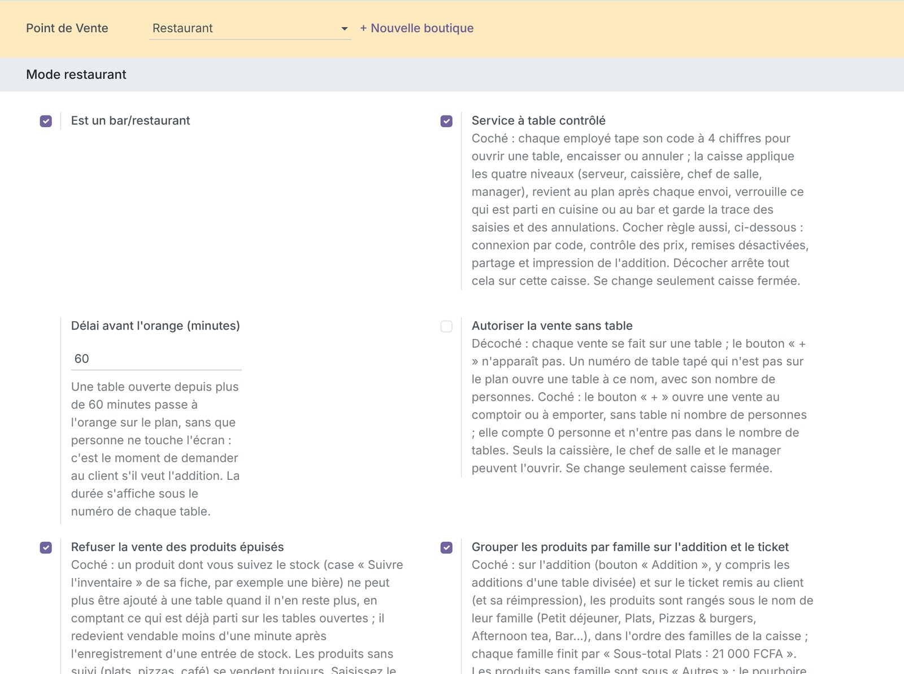
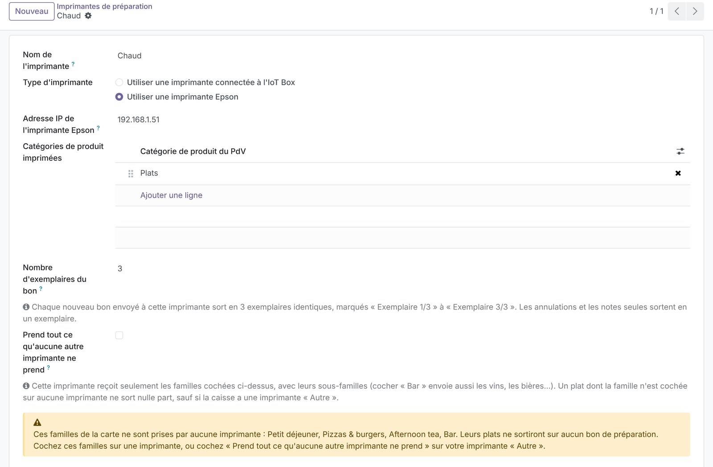
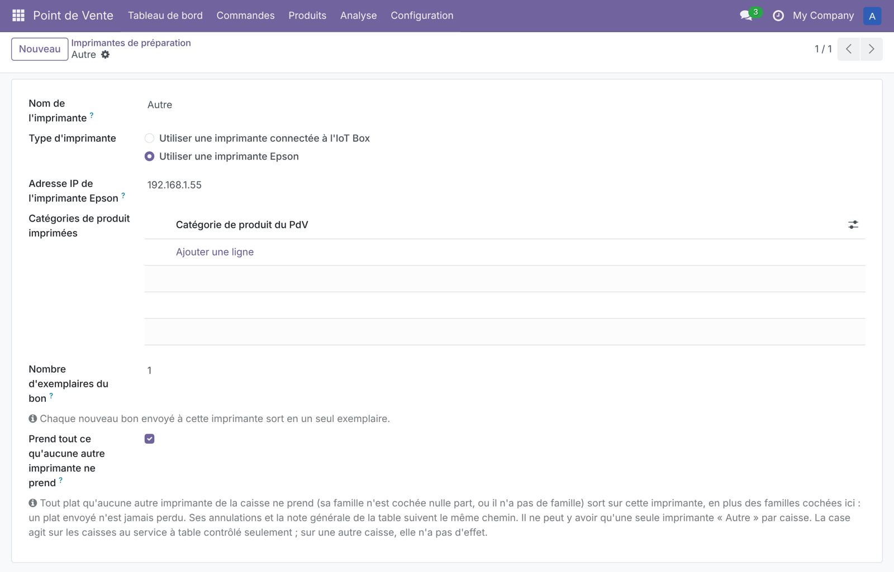
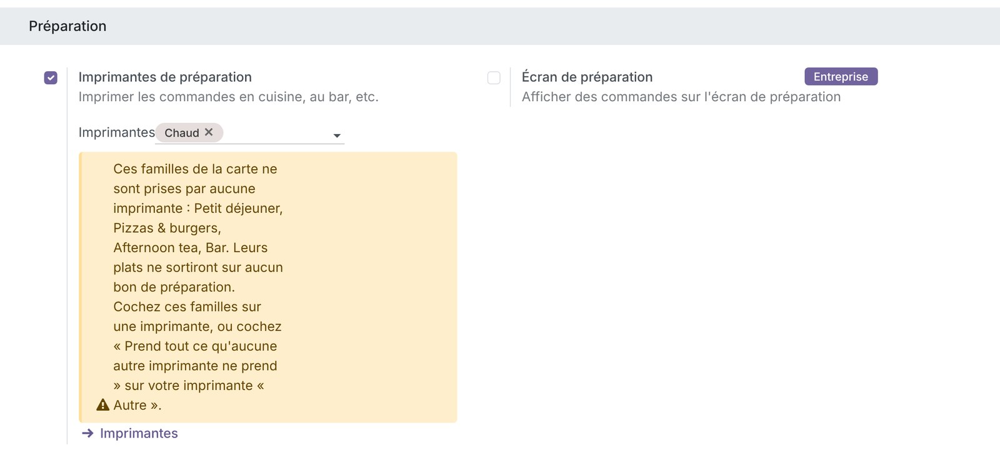
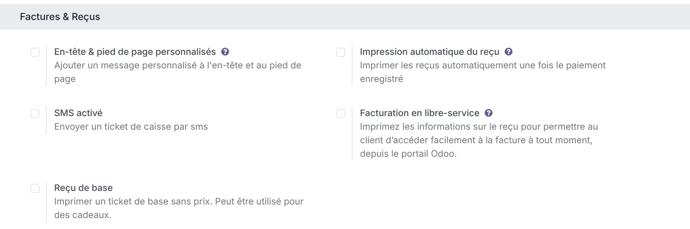
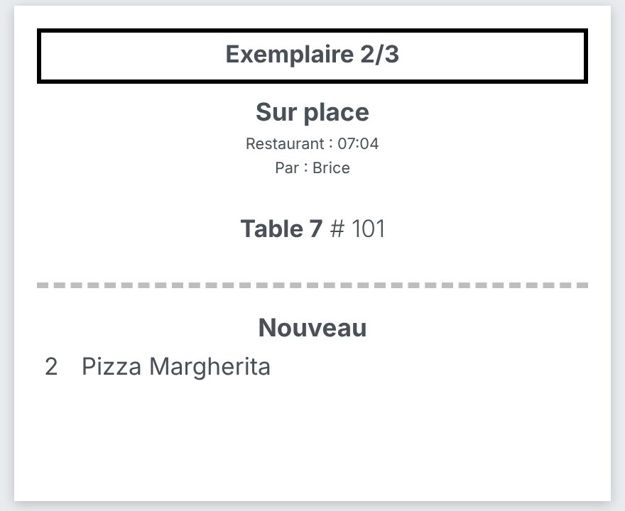
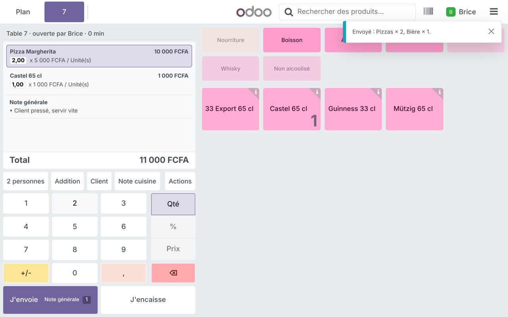
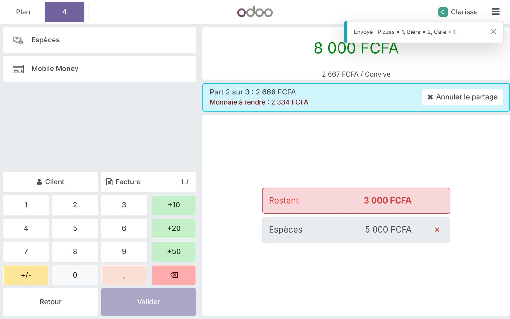
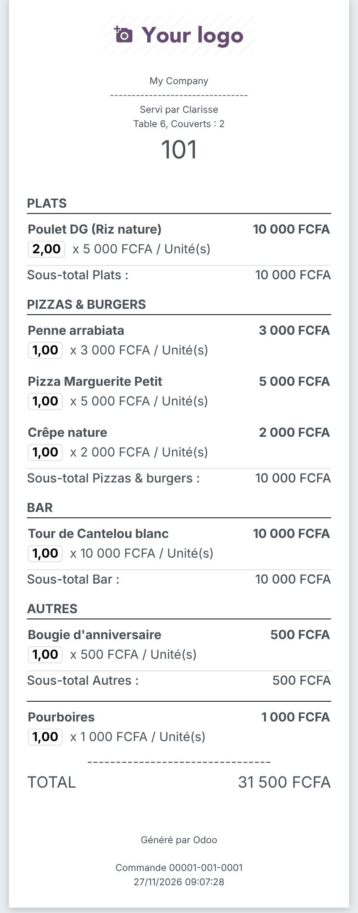

Mettre à jour le serveur, régler les imprimantes et l'addition, montrer au client, vérifier
| Client | Restaurant Le Messager, Douala. Montants en FCFA. Odoo 18 Community sur un serveur Ubuntu. |
|---|---|
| Public | Intégrateur junior. Vous savez vous connecter au serveur en SSH et utiliser Odoo. Vous ne connaissez pas encore les modules AITE : ce guide vous suffit. |
| Périmètre | Seulement les nouveautés de aite_pos_restaurant 18.0.1.0.11 à 18.0.1.0.14 et de aite_resto_carte_messager 18.0.1.3.5 et 18.0.1.3.6. Le reste du restaurant est décrit dans le Guide de l'intégrateur général et le Guide Restaurant. |
| À utiliser avec | Le cahier de scénarios du même kit, AITE_Scenarios_Test_Restaurant_v18.0.1.0.14 (PDF à imprimer, Excel à remplir) : 33 scénarios ST-01 à ST-33, rattachés aux cas R105 à R112. Le chapitre 6 y renvoie. |
| Édition | AITE CONSULTING — 27/11/2026 |
Les quatre règles de cette mise à jour —
(1) Toutes les caisses sont fermées avant de commencer.
(2) Chaque base est sauvegardée avant d'être mise à niveau.
(3) Vous remplacez le dossier d'un module, jamais le répertoire addons entier.
(4) Vous ne désinstallez jamais un module pour « repartir propre ».
Ce guide sert à mettre en service, chez le client, neuf nouveautés de la caisse du restaurant. Il dit quoi taper, où cliquer et ce que vous devez voir à chaque étape.
| Module (nom dans Apps) | Version | Ce qui change pour vous |
|---|---|---|
AITE — Restaurant (service à table)aite_pos_restaurant | 18.0.1.0.14 | Les fonctionnalités F1 à F7. Nouvelle dépendance : pos_epson_printer (module d'Odoo, déjà sur le serveur). |
AITE — Carte du restaurant Le Messager (démonstration)aite_resto_carte_messager | 18.0.1.3.6 | F8 et F9 : la mise à niveau ne touche plus aux produits du client ; le réglage « grouper par famille » est coché une seule fois. |
Les autres modules du restaurant ne changent pas : aite_house_restaurant 18.0.1.0.2, aite_pos_credit 18.0.2.0.8, aite_pos_analytics 18.0.2.1.6, aite_pos_analytics_hr 18.0.1.0.0. S'ils sont plus anciens sur le serveur, il faut aussi les livrer (voir chapitre 2).
| # | Nouveauté, en une phrase | Version | Qui s'en sert | À régler ? | Test |
|---|---|---|---|---|---|
| F1 | « Addition » montre et imprime toutes les additions d'une table divisée (7, 7B, 7C…). | 1.0.11 | serveur, caissière | non | R105 |
| F2 | Partager l'addition à parts égales : bouton à l'écran de paiement, monnaie à rendre, arrondi, mention sur le ticket. | 1.0.12 | caissière | non | R106 |
| F3 | Bon de cuisine en N exemplaires par imprimante (« Exemplaire k/N »), bons en français, une seule alerte en cas de panne. | 1.0.13 | gérant, serveur | oui | R107 |
| F4 | Notes de commande fiables : six corrections (note cuisine, « Ignorer », note au client, note générale, « Table »). | 1.0.13 | serveur, caissière | non | R108, R109 |
| F5 | Chaque imprimante reçoit ses familles (sous-familles comprises) ; imprimante « Autre » ; familles oubliées signalées en orange. | 1.0.14 | intégrateur, serveur | oui | R110, R112 |
| F6 | Impression directe sur les Epson en Wi-Fi, en http ou en https (certificat). | 1.0.14 | intégrateur | oui | R110 |
| F7 | Addition et ticket groupés par famille, avec un sous-total par famille. | 1.0.14 | caissière | à contrôler | R111, R112 |
| F8 | La carte appartient au client : une mise à niveau n'écrase plus ses produits. | carte 1.3.5 | intégrateur, gérant | non | ST-03, ST-04 |
| F9 | La carte coche « grouper par famille » une seule fois. | carte 1.3.6 | intégrateur | à contrôler | R111 |
Condition commune à F1 à F7 — la caisse doit avoir la case « Service à table contrôlé » cochée (Point de Vente → Configuration → Paramètres, bloc « Mode restaurant »). Une autre caisse de la même base garde le comportement d'Odoo : pas de bouton de partage, bons d'Odoo, pas d'imprimante « Autre », ticket non groupé.
Profils. Dans ce guide, « serveur », « caissière » et « manager » sont les niveaux de la fiche employé (« Niveau en caisse »). « Gérant » désigne le responsable du restaurant. Les réglages de la caisse (Configuration → Paramètres) demandent un compte administrateur : c'est vous qui les faites.
| Élément | Ce qu'il faut, et comment le vérifier |
|---|---|
| Accès au serveur | Un compte SSH avec sudo. Testez : sudo -v demande votre mot de passe et ne dit rien d'autre. |
| Accès à Odoo | Un compte administrateur sur chaque base du client (pour Apps et les paramètres de la caisse). |
| Le kit | Le fichier AITE_Kit_Integrateur_Restaurant_v18.0.1.0.14.zip. À sa racine : le dossier modules/ (avec aite_pos_restaurant et aite_resto_carte_messager), ce guide, le cahier de scénarios (PDF et Excel), les notes de version et LISEZMOI.txt. |
| Odoo | Odoo 18 Community installé par le paquet Ubuntu : code dans /usr/lib/python3/dist-packages/odoo/addons, service odoo, réglages dans /etc/odoo/odoo.conf. Ce répertoire est partagé par toutes les bases. |
| Module Epson d'Odoo | ls /usr/lib/python3/dist-packages/odoo/addons/pos_epson_printer doit lister des fichiers (dont __manifest__.py). Il fait partie d'Odoo : rien à copier. |
| Imprimantes (F3, F5, F6) | Des imprimantes Epson ePOS en réseau (TM-m30III chez le client), chacune avec une adresse IP fixe (réservée dans la box). |
| Imprimante de tickets (F7) | Seulement si le client veut le ticket final groupé imprimé seul au paiement (voir chapitre 9). |
| Un créneau | Environ 1 heure sans service : les caisses seront fermées et Odoo arrêté pendant la mise à niveau. |
Les commandes de ce guide utilisent la date du jour dans le nom des sauvegardes. Dans votre session SSH, tapez une fois :
J=$(date +%Y%m%d) ; B=/var/backups/aite ; echo $J
la date du jour, par exemple 20261127 pour le 27/11/2026. Si vous ouvrez une nouvelle session SSH, retapez cette ligne (et la ligne F=… du chapitre 3, étape 3).
Conseil : copiez les commandes bloc par bloc. Une ligne qui finit par \ continue sur la ligne suivante.
Suivez les étapes dans l'ordre. Ne passez pas à l'étape suivante si vous ne voyez pas ce qui est attendu.
aucune carte de caisse ne porte « En cours » (ou « Ouverte »).
sudo -u postgres psql -Atc "select datname from pg_database where not datistemplate"
une base par ligne (par exemple postgres et les bases du client).
Pour chaque base du client, notez l'état des modules (remplacez BASE) :
sudo -u postgres psql -d BASE -Atc "select name, latest_version, state from ir_module_module where name like 'aite_%' or name = 'pos_epson_printer' order by name"
une ligne par module, par exemple aite_pos_restaurant|18.0.1.0.10|installed. Notez les bases où aite_pos_restaurant est installed, et si aite_resto_carte_messager l'est aussi. Si aite_house_restaurant, aite_pos_credit, aite_pos_analytics ou aite_pos_analytics_hr ont une version plus petite que celles du chapitre 1, appelez AITE pour recevoir ces dossiers avant de continuer.
grep -E "^data_dir" /etc/odoo/odoo.conf || echo "pas de data_dir" F=/var/lib/odoo/.local/share/Odoo/filestore sudo ls $F
le nom de chaque base dans la liste. Si la première commande affiche une ligne data_dir = …, retapez F=<ce chemin>/filestore avec ce chemin, puis sudo ls $F.
sudo systemctl stop odoo ; systemctl is-active odoo
inactive. Les tablettes affichent alors une erreur de connexion : c'est normal.
BASE) :
sudo mkdir -p $B sudo -u postgres pg_dump -Fc -f /tmp/BASE_$J.dump BASE sudo mv /tmp/BASE_$J.dump $B/ sudo tar czf $B/BASE_filestore_$J.tgz -C $F BASE
Puis sauvegardez les anciens dossiers des deux modules (une seule fois) :
cd /usr/lib/python3/dist-packages/odoo/addons sudo tar czf $B/aite_modules_$J.tgz aite_pos_restaurant aite_resto_carte_messager
sudo ls -lh $B montre un fichier .dump et un _filestore_….tgz par base (taille non nulle), et aite_modules_….tgz. Si la carte n'est pas sur le serveur, tar le signale : sauvegardez seulement aite_pos_restaurant.
scp AITE_Kit_Integrateur_Restaurant_v18.0.1.0.14.zip \ utilisateur@serveur:/tmp/kit.zip
puis sur le serveur :
mkdir -p /tmp/kit && cd /tmp/kit && unzip -o /tmp/kit.zip find /tmp/kit -maxdepth 5 -name __manifest__.py
deux lignes : /tmp/kit/modules/aite_pos_restaurant/__manifest__.py et /tmp/kit/modules/aite_resto_carte_messager/__manifest__.py. Le dossier qui les contient s'appelle KIT ci-dessous : ici /tmp/kit/modules.
KIT=/tmp/kit/modules # adaptez si l'étape 6 a donné un autre chemin
A=/usr/lib/python3/dist-packages/odoo/addons
for m in aite_pos_restaurant aite_resto_carte_messager; do
sudo rm -rf "${A:?}/${m:?}" && sudo cp -r "${KIT:?}/$m" "$A/"
sudo find "$A/$m" -name __pycache__ -prune -exec rm -rf {} +
sudo chown -R root:root "$A/$m" && sudo chmod -R u=rwX,go=rX "$A/$m"
done
grep "'version'" $A/aite_pos_restaurant/__manifest__.py
grep "'version'" $A/aite_resto_carte_messager/__manifest__.py
'version': '18.0.1.0.14' et 'version': '18.0.1.3.6'. Si une commande répond parameter null or not set, la ligne A=… ou KIT=… n'a pas été tapée (nouvelle session SSH) : rien n'a été supprimé ; retapez ces deux lignes et recommencez.
BASE notée à l'étape 2) :
sudo -u odoo odoo -c /etc/odoo/odoo.conf -d BASE \ -u aite_pos_restaurant,aite_resto_carte_messager \ --stop-after-init --log-level=info \ --logfile=/tmp/maj_BASE.log ; echo "code de sortie : $?" grep -E " (ERROR|CRITICAL) " /tmp/maj_BASE.log grep -c "Registry loaded" /tmp/maj_BASE.log
Si la carte n'est pas installée sur cette base, écrivez seulement -u aite_pos_restaurant. Odoo met les modules dans le bon ordre et installe pos_epson_printer s'il manquait. Le journal va dans le fichier /tmp/maj_BASE.log, pas à l'écran : c'est voulu.
après une à quelques minutes, code de sortie : 0 ; puis rien pour le premier grep ; puis 1 (ou plus) pour le second. Si le second affiche 0, la mise à niveau n'est pas allée au bout : lisez la fin du fichier (tail -n 30 /tmp/maj_BASE.log) et le chapitre 7. Une ligne WARNING … (ERROR/3) Unexpected indentation n'est pas une erreur ; le premier grep ne l'affiche pas.
sudo systemctl start odoo ; sleep 10 ; systemctl is-active odoo systemctl cat odoo | grep -o "logfile[ =][^ ]*" grep -E "^logfile" /etc/odoo/odoo.conf
active, puis le chemin du journal d'Odoo. Avec le paquet Ubuntu, c'est logfile /var/log/odoo/odoo-server.log. Si les deux commandes donnent un chemin, c'est celui de systemctl cat qui compte. On l'appelle L :
L=/var/log/odoo/odoo-server.log # le chemin lu ci-dessus
sudo tail -n 200 $L | grep -E " (ERROR|CRITICAL) "
sudo tail -n 3 $L
rien pour la première commande ; la seconde montre des lignes datées d'il y a moins d'une minute (sinon, ce n'est pas le bon fichier). Si aucun chemin n'est trouvé, le journal est dans sudo journalctl -u odoo -n 200 --no-pager.
colonne « Dernière version » : « AITE — Restaurant (service à table) » 18.0.1.0.14 et « AITE — Carte du restaurant Le Messager (démonstration) » 18.0.1.3.6, Statut « Installé » ; en cherchant « Epson » : « Imprimante Epson PdV » « Installé ».
à l'écran de paiement d'une table, le bouton Partager à parts égales (sous « Client » / « Facture »). S'il manque : chapitre 7.
Autre méthode, par l'interface — Apps → Mettre à jour la liste des Apps → ouvrir chaque module → Mettre à niveau. Elle marche aussi, mais il faut la refaire dans chaque base, et une base oubliée tombe en erreur. Préférez la commande de l'étape 8.
Rien à régler pour F1, F2, F4 et F8 — l'addition d'une table divisée, le partage à parts égales, les corrections des notes et la protection de la carte marchent dès la mise à niveau, sur toute caisse au service à table contrôlé. Il n'y a ni case ni menu à chercher. Seul conseil : mettre en français les modèles de notes d'Odoo (4.6).
Après tout changement de réglage de caisse ou d'imprimante : fermez puis rouvrez la caisse, ou rechargez la page sur chaque tablette. La caisse lit ses réglages à l'ouverture.
« Est un bar/restaurant » coché et « Service à table contrôlé » coché, avec sa phrase qui commence par « Coché : chaque employé tape son code à 4 chiffres… ».

Où est le menu ? — Dans Odoo 18, la liste des imprimantes est dans Point de Vente → Commandes → Imprimantes de préparation, et non dans « Configuration ». Ce menu reste caché tant qu'aucune caisse n'a la case « Imprimantes de préparation » cochée. Le chemin sûr est donc celui des paramètres, ci-dessous.
Avant, pour chaque imprimante Epson : branchez-la sur le Wi-Fi, imprimez sa page d'état (bouton Feed maintenu à l'allumage) et lisez son adresse IP. Dans la box, réservez cette IP (bail DHCP fixe). Sans réservation, l'IP peut changer et les bons ne sortent plus.
sous la case, le champ « Imprimantes » et le lien → Imprimantes.
| Champ (libellé exact) | Que mettre |
|---|---|
| « Nom de l'imprimante » | Odoo pré-remplit « Printer » : effacez-le et tapez le nom du poste (Chaud, Pizza, Froid, Bar, Autre). Ce nom apparaît dans les alertes. |
| « Type d'imprimante » | « Utiliser une imprimante Epson ». Ne laissez pas « Utiliser une imprimante connectée à l'IoT Box » (posé d'office) : sans boîtier IoT, rien ne sort. Le champ « Adresse IP du proxy » disparaît quand vous choisissez Epson. |
| « Adresse IP de l'imprimante Epson » | L'IP réservée, par exemple 192.168.1.51. Toujours la remplir : Odoo n'empêche pas d'enregistrer sans. |
| « Catégories de produit imprimées » | Ajouter une ligne par famille de la carte que ce poste prépare (tableau ci-dessous). Cocher une famille envoie aussi ses sous-familles. |
| « Nombre d'exemplaires du bon » | De 1 à 5. Par défaut 1. Mettez 3 si la cuisine veut trois bons identiques. |
| « Prend tout ce qu'aucune autre imprimante ne prend » | À cocher sur une seule imprimante, « Autre ». Décochée sur les autres. |
sous « Nombre d'exemplaires du bon », la phrase qui dit ce qui va se passer. À 3 : « Chaque nouveau bon envoyé à cette imprimante sort en 3 exemplaires identiques, marqués « Exemplaire 1/3 » à « Exemplaire 3/3 ». Les annulations et les notes seules sortent en un exemplaire. »
la liste des imprimantes. Sa colonne « Adresse IP du proxy » reste vide pour les Epson : c'est normal. Pour contrôler l'IP d'une Epson, ouvrez l'imprimante.
aucun cadre orange sous « Imprimantes ». S'il en reste un, il nomme les familles qu'aucune imprimante ne prend : cochez-les sur une imprimante, ou ajoutez l'imprimante « Autre ».
| Imprimante | « Catégories de produit imprimées » | Remarque |
|---|---|---|
| Chaud | Plats, Petit déjeuner, Burgers, Pastas | Exemplaires : selon la demande de la cuisine (3 par exemple). |
| Pizza | Pizzas | |
| Froid | Crêpes & glaces, Afternoon tea | |
| Bar | Bar | Couvre aussi Vins, Bières, Sans alcool… |
| Autre | aucune | Case « Prend tout ce qu'aucune autre imprimante ne prend » cochée. |
Burgers, Pastas, Pizzas et Crêpes & glaces sont des sous-familles de « Pizzas & burgers ». Si le client a créé d'autres familles, vérifiez-les dans Point de Vente → Configuration → Catégories de produits du PdV.



Le texte est par exemple : « Ces familles de la carte ne sont prises par aucune imprimante : Petit déjeuner, Pizzas & burgers, Afternoon tea, Bar. Leurs plats ne sortiront sur aucun bon de préparation. » Il se met à jour pendant la saisie. Il disparaît dès qu'une imprimante « Autre » est sur la caisse. Si la caisse a « Limiter les catégories » (bloc « Produit & catégories PdV »), seules ses familles sont signalées.
Regardez l'adresse d'Odoo sur une tablette. Si elle commence par http://, il n'y a rien de plus à faire. Si elle commence par https://, la tablette parle à l'imprimante en https : il faut qu'elle accepte le certificat de chaque imprimante.
http://<IP> dans un navigateur) et activez SSL/TLS et ePOS-Print (voir la notice Epson).https://<IP>, puis Paramètres avancés → Continuer pour accepter le certificat.
la page de l'imprimante s'affiche. Revenez à la caisse : les bons sortent.
Si vous l'oubliez, l'alerte « Bon non imprimé » ajoute : « Odoo est ouvert en https : si c'est la première fois sur cette tablette, ouvrez une fois https://<IP> dans le navigateur et acceptez le certificat de l'imprimante, puis revenez à la caisse. »
la case « Grouper les produits par famille sur l'addition et le ticket ». Elle n'apparaît que si « Service à table contrôlé » est coché.
L'addition (bouton « Addition ») est groupée dès que la case 4.4 est cochée. Le ticket final, lui, ne sort seul au paiement que si deux conditions sont remplies :
Sinon, la caissière le réimprime depuis Point de Vente → Commandes. La carte ne coche pas cette case : sans imprimante de tickets, chaque paiement ouvrirait la fenêtre d'impression du navigateur. Décidez avec le client (chapitre 9).

Les fenêtres « Note cuisine » et « Note générale » proposent des boutons tout faits. Odoo les crée en anglais : Wait, To Serve, Emergency, No Dressing. Ce n'est pas une nouveauté AITE, mais le serveur les voit à chaque note.
la liste des quatre modèles en anglais.
les nouveaux noms dans la liste, enregistrés.
dans « Note cuisine », les boutons en français.
Faites la démonstration sur la vraie caisse, avec le gérant, une caissière et un serveur. Prévoyez 30 minutes. Annulez ensuite les commandes d'essai.
À dire au serveur — après J'envoie, attendez le retour au plan des tables avant de poser la tablette, de la verrouiller ou de recharger la page. Avec plusieurs exemplaires, cela peut prendre quelques secondes (8 secondes mesurées avec 3 exemplaires). Si la page est fermée trop tôt, les bons peuvent être sortis alors que la commande n'est pas enregistrée en caisse.
| Nouveauté | Le geste | Ce qu'il doit voir |
|---|---|---|
| Bons sur chaque poste (F3, F5) | Saisir un plat, une pizza, une bière, puis J'envoie. | Chaque bon sort sur son imprimante, sans fenêtre. Un seul bon par imprimante, en français (« Sur place », « Table 7 », « Nouveau »). Avec 3 exemplaires : « Exemplaire 1/3 » à « 3/3 ». |
| Note cuisine (F4) | Toucher la ligne → Note cuisine → taper « bien cuit » → Appliquer → J'envoie. | Le bon porte la note sous le plat. Sur un plat déjà parti, la note va à la nouvelle unité seulement. |
| Ignorer (F4) | Ouvrir une note, taper, puis Ignorer (bouton de la fenêtre de note). | Rien ne change. Pour effacer une note : vider le champ puis Appliquer ; le bon dit « Note retirée : … ». |
| Note générale (F4) | Actions → Note générale → « Client pressé » → Appliquer → J'envoie. | « J'envoie » affiche « Note générale 1 ». Notification « Envoyé : Note générale × 1. » Elle va en cuisine et au bar, jamais sur l'addition ni sur l'écran client. |
| Note au client (F4) | Toucher la ligne → Actions → Note au client. | La note est sur l'addition et le ticket ; elle ne va pas en cuisine. Marche aussi sur un plat déjà envoyé. |
| Table divisée (F1) | Actions → Diviser l'addition → produits de la part → Créer l'addition à part ; puis Addition. | Avec imprimante de tickets : un ticket par addition ouverte. Sans : la fenêtre « Les additions de la table 7 », le « Total des additions », et J'imprime les additions. |


| Nouveauté | Le geste | Ce qu'elle doit voir |
|---|---|---|
| Parts égales (F2) exemple : 100 000 FCFA à 3 | J'encaisse → Partager à parts égales → « Combien de personnes paient ? » : toucher 3 (ou Plus pour 9 à 20) → Valider. Puis toucher le mode de paiement de chaque personne. | Bandeau « Part 1 sur 3 : 33 333 FCFA ». La dernière part paie le reste (33 334). À la fin : « Les 3 parts sont encaissées. Validez le paiement. » → Valider. Le ticket porte « Partagée en 3 parts égales ». |
| Monnaie d'une part | La personne donne 50 000 en espèces : taper 50 000 au pavé. | « Monnaie à rendre : 16 667 FCFA ». La ligne revient à 33 333 au mode suivant. |
| Annuler | Annuler le partage. | Retour au paiement habituel ; la ligne suivante paie tout le reste. |
| Addition groupée (F7) | Addition. | Titres en majuscules (PLATS, PIZZAS & BURGERS, BAR, AUTRES), « Sous-total … » par famille ; pourboire et remise après ; total inchangé. |


Le cahier de scénarios du kit (AITE_Scenarios_Test_Restaurant_v18.0.1.0.14, PDF et Excel) décrit chaque test pas à pas : 33 scénarios, ST-01 à ST-33, dans les blocs A à G. La colonne « Recette » de chaque scénario donne son cas. Correspondance :
| Cas | Version | Ce qu'il vérifie |
|---|---|---|
| R105 | 1.0.11 | Additions d'une table divisée : fenêtre, impression, part payée, part déplacée. |
| R106 | 1.0.12 | Parts égales : 3 personnes, monnaie d'une part, ligne supprimée, annulation. |
| R107 | 1.0.13 | Exemplaires (3, refus de 0 et 6), bon d'annulation, panne. |
| R108 | 1.0.13 | Note d'un plat parti, « Ignorer », note au client. |
| R109 | 1.0.13 | Note générale seule, absente de l'addition et de l'écran client. |
| R110 | 1.0.14 | Cinq imprimantes, cadre orange, refus d'une 2ᵉ « Autre », routage, annulation. |
| R111 | 1.0.14 | Addition et ticket groupés, table divisée, réglage décoché. |
| R112 | 1.0.14 | Cadre pendant la saisie, « Autre » hors mode, pourboire hors bon et hors rubrique. |
| ST-03, ST-04 | 1.3.5 / 1.3.6 | Un produit renommé et un réglage décoché restent tels quels après une mise à niveau. |
R110 et R112 utilisent une seconde caisse « Bar piscine » hors mode : ne les jouez que sur une base de test, pas sur la base du client.
$L, chapitre 3, étape 9) sans ligne ERROR depuis le redémarrage.| Symptôme | Cause probable | Que faire |
|---|---|---|
Erreur rouge à l'ouverture de la caisse ou d'un écran, avec UndefinedColumn (par exemple « column pos_printer.aite_exemplaires does not exist »). | Cette base n'a pas été mise à niveau : le code est nouveau, la base est ancienne. | Arrêter Odoo, faire l'étape 8 du chapitre 3 sur cette base, redémarrer. |
Mise à niveau en ERROR : « Veuillez fermer et valider les sessions PdV ouvertes suivantes avant de modifier ce mode de paiement. » | Une session de caisse était ouverte (défaut connu sur le mode « Cash »). | Redémarrer Odoo, fermer la session (Fermer la session, valider), arrêter Odoo, relancer la commande de mise à niveau. |
| Pas de bouton « Partager à parts égales », bons encore en anglais (« New », « Tableau 7 »). | La tablette garde l'ancien code de la caisse en cache, ou la caisse n'est pas au service à table contrôlé. | Ctrl+Maj+R (ou vider le cache) et rouvrir la caisse. Vérifier la case « Service à table contrôlé ». Vérifier la version dans Apps. |
| Le menu « Imprimantes de préparation » est introuvable. | Il est sous « Commandes », et caché tant qu'aucune caisse n'a la case cochée. | Passer par Paramètres → bloc « Préparation » → lien « → Imprimantes » (chapitre 4.2). |
| « Bon non imprimé » à chaque envoi pour un poste. | Imprimante éteinte, IP changée, type resté sur « IoT Box », ou certificat https non accepté. | Vérifier l'alimentation et le réseau ; réimprimer la page d'état et comparer l'IP ; type « Utiliser une imprimante Epson » ; en https, chapitre 4.3. |
| Un plat ne sort sur aucun bon. | Sa famille n'est cochée sur aucune imprimante et il n'y a pas d'« Autre ». | Lire le cadre orange des paramètres ; cocher la famille ou ajouter l'imprimante « Autre ». |
| Un plat sort sur deux postes. | Sa famille (ou une famille parente) est cochée sur deux imprimantes. | Retirer la famille d'une des deux imprimantes. Rappel : cocher « Bar » couvre toutes ses sous-familles. |
| Les réglages changés ne s'appliquent pas. | La caisse lit ses réglages à l'ouverture. | Fermer puis rouvrir la caisse, ou recharger chaque tablette. |
| Addition non groupée. | Case « Grouper les produits par famille… » décochée, ou caisse hors service à table contrôlé. | Chapitre 4.4. La facture comptable (PDF) n'est jamais groupée : c'est normal. |
| Le ticket final groupé ne sort pas au paiement. | « Impression automatique du reçu » décoché, ou pas d'imprimante de tickets. | Réimprimer depuis Commandes, ou régler selon la décision du client (chapitre 4.5). |
| Le partage a disparu en cours de paiement. | Page rechargée, autre tablette, ou produit / pourboire ajouté. | Toucher à nouveau « Partager à parts égales » sur la même tablette. Les paiements déjà faits restent. |
| « 2 667 FCFA / Convive » alors que la part vaut 2 666. | Affichage d'Odoo arrondi au plus proche. | Rien : le bandeau AITE donne le bon montant. |
« Mettre à niveau » refuse : rm/cp « Permission non accordée », ou Odoo ne voit pas le module. | Droits des dossiers. | Refaire les commandes chown et chmod de l'étape 7. |
Si le problème reste : gardez le fichier /tmp/maj_BASE.log et les 100 dernières lignes du journal (sudo tail -n 100 $L, chapitre 3, étape 9), faites une photo de l'écran, et appelez AITE.
À lire avant — le retour arrière remet chaque base dans l'état de la sauvegarde. Les ventes faites depuis la mise à niveau sont perdues. Ne le faites qu'avant toute vente ; sinon, appelez AITE. Ne désinstallez jamais un module pour revenir en arrière : vous perdriez des données.
sudo systemctl stop odoo ; systemctl is-active odoo
inactive.
A=/usr/lib/python3/dist-packages/odoo/addons
sudo rm -rf "${A:?}/aite_pos_restaurant" \
"${A:?}/aite_resto_carte_messager"
sudo tar xzf $B/aite_modules_$J.tgz -C $A
sudo chown -R root:root $A/aite_pos_restaurant $A/aite_resto_carte_messager
sudo chmod -R u=rwX,go=rX $A/aite_pos_restaurant $A/aite_resto_carte_messager
grep "'version'" $A/aite_pos_restaurant/__manifest__.py
l'ancienne version, celle notée au chapitre 3, étape 2. Nouvelle session SSH ? Retapez d'abord B=/var/backups/aite, J=<date de la sauvegarde> (par exemple J=20261127) et la ligne F=… du chapitre 3, étape 3.
BASE) :
sudo -u postgres dropdb BASE
sudo -u postgres createdb -O odoo BASE
sudo -u postgres pg_restore -d BASE --no-owner --role=odoo $B/BASE_$J.dump
sudo rm -rf "${F:?}/BASE"
sudo tar xzf $B/BASE_filestore_$J.tgz -C $F
sudo chown -R odoo:odoo $F/BASE
aucune erreur. dropdb refuse si quelqu'un est encore connecté : vérifiez qu'Odoo est bien arrêté.
sudo systemctl start odoo, puis contrôler les versions dans Apps (chapitre 3, étape 10).
les anciennes versions. pos_epson_printer revient aussi à son état d'avant.
| Question | Ce qu'il faut savoir |
|---|---|
| Combien d'exemplaires par poste ? | De 1 à 5 par imprimante. Les annulations et les notes seules sortent toujours en un exemplaire. |
| Garder l'addition groupée par famille ? | Cochée par la carte à la mise à niveau. Elle change l'addition et le ticket, pas le total. |
| Imprimer le ticket final seul au paiement ? | Il faut une imprimante de tickets et « Impression automatique du reçu ». Sinon, réimpression depuis Commandes. |
| Une imprimante « Autre » ? | Conseillée : un plat sans famille cochée ne se perd jamais. Sans elle, surveiller le cadre orange après chaque nouvelle famille. |
| Odoo en http ou en https ? | En https, chaque tablette doit accepter le certificat de chaque imprimante (chapitre 4.3), et le refaire sur une tablette neuve. |
En fin d'intervention — notez dans le compte rendu : les bases mises à niveau, les versions lues dans Apps, les IP des imprimantes, le nombre d'exemplaires choisi, les décisions du tableau 9.3, et l'emplacement des sauvegardes (/var/backups/aite). Gardez les sauvegardes au moins 30 jours.